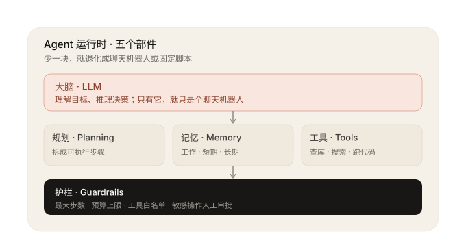
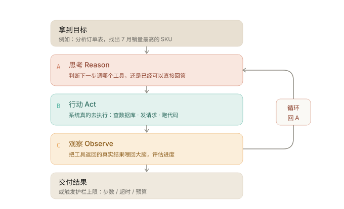
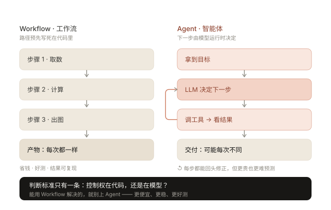

AI Agent · 概念速学 · 核对 2026-09-03
自己决定怎么做的 AI，Agent
一句话：Agent 是对着一个目标，自己拆步骤、调工具、看结果，直到把事办成 的 AI 系统——不是只会“你问我答”的聊天机器人。差在一点：自主决策 + 行动闭环 。
约 3 分钟读完 图解 12 题分层自测 来源见页脚
01
是什么
“Agents are systems where models dynamically direct their own processes and tool usage, maintaining control over how they accomplish tasks.”
翻译：Agent 里，模型自己指挥“下一步做什么、用什么工具、怎么完成”，而不是由写死的代码决定。
Source · Anthropic《Building Effective Agents》
经典配方出自 Lilian Weng《LLM Powered Autonomous Agents》：LLM ＋ Planning ＋ Memory ＋ Tools 。工程上还常补一个护栏（Guardrails） 。
02
三种权威口径 说法不同，内核一致
Anthropic · 2025
“Agent 让模型动态指挥自身进程与工具使用。”
在更宽的“Agentic Systems（智能体系统）”伞下，严格区分 Workflow 与 Agent——关键看路径由代码定，还是由模型定 。
ISO 定义 · 经 WEF 白皮书引用
“Agent 是使用传感器感知环境、通过效应器响应的实体，具有自主性与权限。”
源自世界经济论坛《驾驭人工智能前沿》白皮书。强调两件事：感知环境 + 有授权地行动 。
新加坡 GovTech · 2025
“Agent 是目标导向、能独立思考与行动的实体。”
内部是一个持续循环：Observing（观察）→ Reasoning（推理）→ Acting（行动）→ Learning（学习） 。
03
打个比方
🧑💼 顾问 vs 实习生
聊天机器人＝顾问：问一句答一句。Agent＝实习生：交代一件完整的事，他会自己拆任务、查资料、缺数据会补查，最后交付成果。
🕵️ 像侦探查案
拿到委托 → 收集线索（调工具）→ 推理 → 发现不够 → 再查 → 结案。不是一次想通的，而是“试一步、看一步、再试”。
04
解剖：五个部件
01 🧠 大脑 · LLM 理解指令、推理决策。只靠它＝聊天机器人。
02 🗺️ 规划 · Planning 把大目标拆成步骤；常见三种：单步决策 / 先规划后执行 / 动态再规划。
03 📝 记忆 · Memory 工作记忆（本次任务草稿）、短期记忆（本会话）、长期记忆（跨次运行，多放向量库）。
04 🛠️ 工具 · Tools 查库、搜网页、发邮件、执行代码……让 Agent“碰到真实世界”。接入方式常见 Function Calling 与 MCP。
05 🛡️ 护栏 · Guardrails 最大步数、预算上限、工具白名单、敏感操作需人工审批——防止乱来。

图 1 · 五部件：大脑负责想，规划负责拆，记忆负责记，工具负责做，护栏兜底
05
核心机制：Agent 循环
几乎所有 Agent 跑的都是同一个循环，叫 ReAct（Reason ＋ Act） ：
🎯 拿到目标
↓
A 思考 Reason LLM 决定：下一步调哪个工具，还是直接回答？
↓
B 行动 Act 系统真的去执行工具调用（查数据库、发请求、跑代码）。
↓
C 观察 Observe 把工具返回的“真实数据”拿回来，喂回给大脑评估进度。
↺ 回到 A ，直到完成目标，或触发护栏上限（步数 / 超时 / 预算）
关键在“闭环 + 真实反馈”：答错能重来、缺数据会补查。每一步都用环境返回的真实结果评估 ——这是 Agent 与普通程序最本质的差别。

图 2 · ReAct 循环：A 思考 → B 行动 → C 观察 → 回到 A，直到完成或触顶
06
一个具体场景 数据分析 Agent
1️⃣ 接目标 ：“分析订单表，找出 7 月销量最高的 SKU，出一份报告”。
2️⃣ 探查数据 ：读取 CSV，发现两列有缺失值、日期格式不一致。
3️⃣ 动态决策 ：写脚本清洗与补全 → 跑 SQL 聚合 → 发现疑似脏数据，回头修正口径再查。
4️⃣ 护栏介入 ：只读权限、限定执行时长、禁止删表；对外发送报告前需人工确认。
5️⃣ 留痕闭环 ：每步操作与结果都记录，最后汇报结论与依据。
为什么不用固定脚本？因为数据状况不可预测——有缺失、有脏值、要反复查证。Agent 能边做边调整 ；但也因此更贵、更难预测，必须配护栏。
07
别混淆 边界在哪
💬 聊天机器人Chatbot
答完即停。Agent 多一个“行动→观察”闭环 ，能真正办成事。
🛤️ 工作流Workflow
路径写死，同样输入必得同样输出。Anthropic 建议：能不用 Agent 就不用 ，固定步骤先上 Workflow——更便宜、更可靠。
📦 大模型LLM
LLM 是“语言脑”，只理解与生成；Agent 是把它装进感知—决策—行动的壳里 去完成任务。不是同一层。
🔌 MCP / Skill协议与技能包
它们是 Agent 的零件 （MCP 管“怎么接工具”、Skill 管“怎么做某事”）；Agent 是组装并指挥零件干活 的系统。不是同一层。
⚖️ 自主度
“自主”不等于“无人看管”。给自主分级，高成本 / 敏感操作保留人工审批 （业界常拿自动驾驶 L1–L5 类比自主程度）。
🧨 安全雷区
同时具备“私有数据 + 接触不可信内容 + 对外通信”＝提示注入高发组合（Simon Willison：The Lethal Trifecta）。
使用边界一句话 ：先问“路径是固定的吗？”是 → Workflow；需要自行决策、查证、适应变化 → 再考虑 Agent。

图 3 · 分水岭：路径写死在代码里，还是由模型运行时决定
08
最小示例 一段伪代码看懂循环
一个最小 Agent 的骨架（伪代码）
def agent(目标, tools, 最大步数=25):
历史 = [目标] # 记忆：先装目标
for i in range (最大步数): # 护栏：限制循环次数
想法 = llm(历史, tools) # 大脑：想下一步（思考）
if 想法.完成: return 想法.答案
结果 = 执行(想法.要调的工具) # 手脚：真正去调工具（行动）
历史 += [结果] # 把真实反馈喂回去，继续循环
09
五行速记
01 Agent ≠ 会聊天的模型 ，而是“能自己决定并办成事”的系统。
02 一句话流程：目标 → 拆步骤 → 调工具 → 看真实结果 → 循环 。
03 五个部件：LLM 大脑 · 规划 · 记忆 · 工具 · 护栏 ，缺护栏最危险。
04 固定路径用 Workflow ，开放、要自适应才上 Agent 。
05 私有数据＋不可信内容＋对外通信 ＝提示注入雷区。
10
自测 12 题 · 分 3 层
达标线：入门 4/4 ＋ 进阶 ≥3 ＋ 挑战 ≥2
已答 0 / 12 答对 0 题
11
文献资料 官方文档 ＋ 学术论文 · 逐条核对
本页只依据一手来源 ：产品官方文档与公开可检索的学术论文。博客、新闻与机构科普等非一手 材料已移至页脚，仅作延伸线索，不作为引用依据。
学术论文一手 · arXiv 可查
ReAct: Synergizing Reasoning and Acting in Language Models — Shunyu Yao 等，2022-10-06，arXiv:2210.03629。思考—行动循环（Reason → Act → Observe）的原始出处。arxiv.org/abs/2210.03629 Reflexion: Language Agents with Verbal Reinforcement Learning — Noah Shinn 等，2023-03-20，arXiv:2303.11366。失败后用语言反思再重试的机制。arxiv.org/abs/2303.11366 Tree of Thoughts: Deliberate Problem Solving with Large Language Models — Shunyu Yao 等，2023-05-17，arXiv:2305.10601。对应「规划」部件的多路径搜索思路。arxiv.org/abs/2305.10601 Toolformer: Language Models Can Teach Themselves to Use Tools — Timo Schick 等，2023-02-09，arXiv:2302.04761。模型自主决定调用工具的代表性工作。arxiv.org/abs/2302.04761 A Survey on Large Language Model based Autonomous Agents — Lei Wang 等，2023-08-22，arXiv:2308.11432。智能体「规划—记忆—工具」组成框架的系统综述。arxiv.org/abs/2308.11432
核对方式：链接于 2026-09-10 逐条联网访问确认可达；论文的标题、作者与提交日期取自 arXiv 官方 API 返回值，编号可在 arxiv.org 直接检索复核。以上均为公开的官方文档或学术论文原文（不含二手转述）；如需引用正式发表版本，请以论文页面标注的会议 / 期刊信息为准。